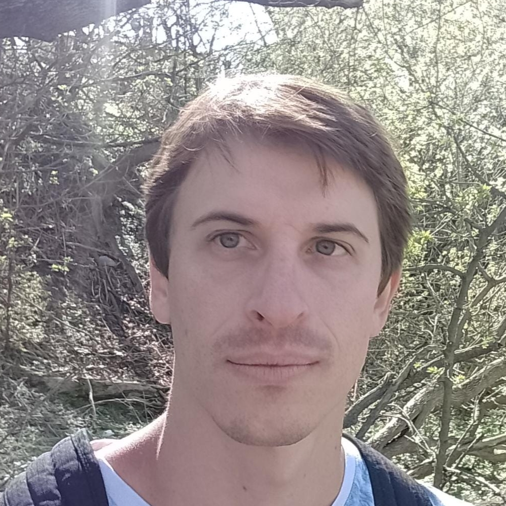

Luego de desarrollar varios desafíos menores, finalmente llegamos a la producción de ésta página como Proyecto Final del curso.
Integrantes:
Ailin Perazzini, 28 años, Contadora.
Agustin Avalos, 27 años, Ingeniero
Alejandro Kinbaum, 32 años, Ingeniero

{% endblock %}